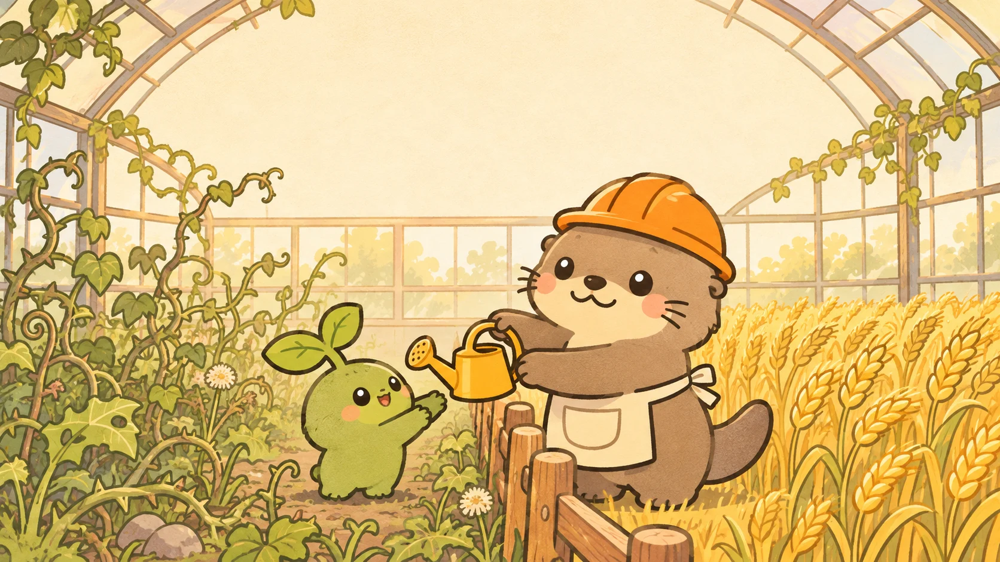
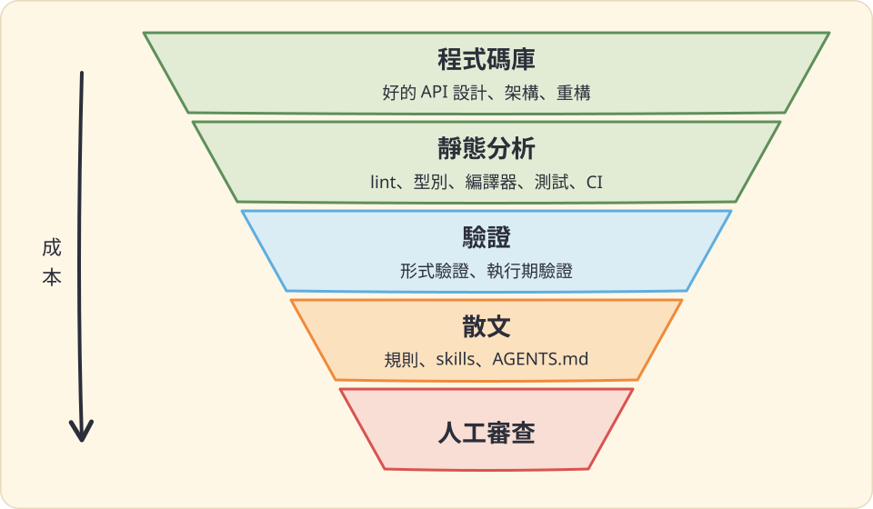
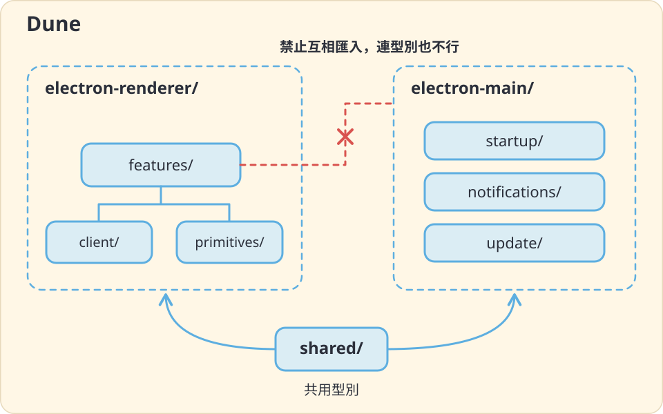
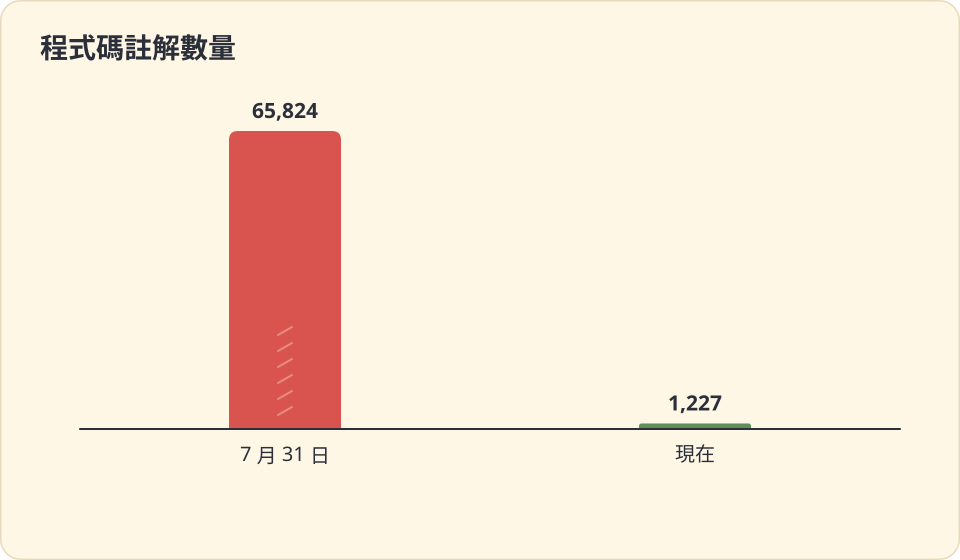
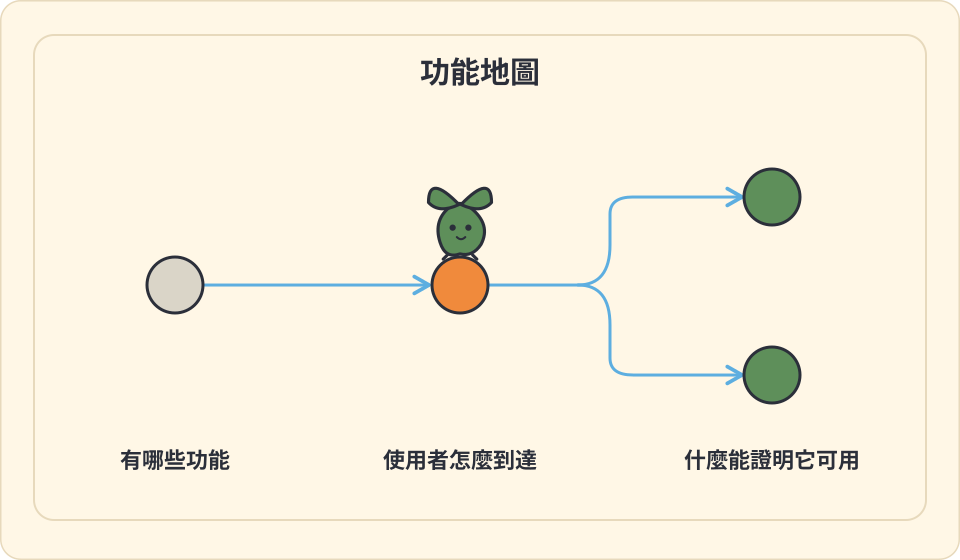
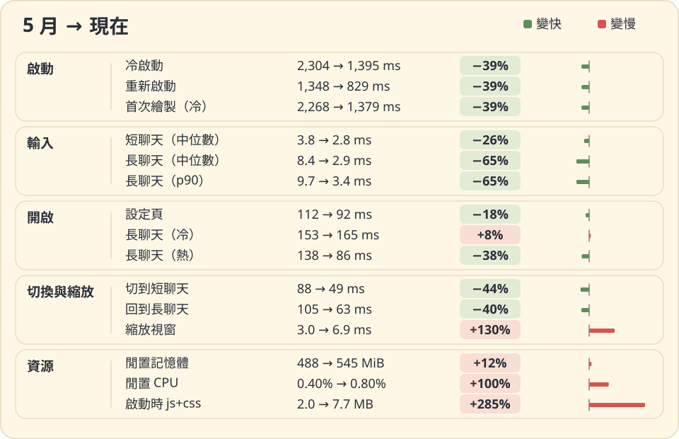

溫室麥田 · LAUREN TAN把糾正寫成規則，讓 slop 變黃金
從程式碼庫到驗證：把每次糾正留在 agent 的工作環境裡。
- 讓好程式碼更容易長出來
- 先聽講者經驗，再核對證據邊界
AI 製作的非官方導讀；未經人工逐句校稿。旁白為 AI 合成語音，可隨時關閉。

- Lauren Tan 在 AI Engineer Code Summit 以〈All Code Is Slop (Except Mine)〉為題演講，影片版面標示她是 SpaceX 的 Principal Engineer。
- Lauren Tan 也以 poteto 為名，談的是讓 AI 程式代理，也就是 agent，產生更多程式碼時，工程師如何守住品質；本導讀依影片標示交代身分，不代表公司官方背書。
- 這份動畫由 AI 製作，未經人工逐句校稿，旁白是 AI 合成語音，可隨時關閉；先沿著講者的經驗走，再集中核對數字與公開佐證，最後整理能帶走的做法。
講者主張 · 品質產量放大之後，工程師仍得守住品質
- slop：低品質雜訊程式碼
- 產量增加，品質仍要守住
- 信任來自對環境的投入

講者主張 · 環境信任要從程式碼庫養起，壞模式也會跟著長大
低信任：人反覆檢查
架構與靜態分析約束
讓 agent 自行驗證
高信任：持續清理壞模式

- Lauren Tan 接著用倒金字塔安排投入順序，從低信任走向高信任；最先處理的是 agent 每次都會讀到的程式碼庫。 ▶ 01:56
- 她將架構、API、重構，以及 lint、型別、編譯器和測試，視為確定性的約束，讓正確寫法成為預設。 ▶ 02:09
- 再疊上執行期與形式驗證，檢查 bug、系統屬性與 agent 是否理解意圖；需要判斷的事情，再加入 rules、skills 等自然語言描述。 ▶ 02:32
- 她用花園比喻程式碼庫：既有程式碼是重要輸入，留下的權宜之計會被下個 agent 當成慣例，像雜草般蔓延。 ▶ 03:27
- 因此，她要求把糾正寫成可重現的檢查，並清理程式碼庫，讓 agent 接下來有好的模式可複製。 ▶ 03:12
講者主張 · DUNEDune 把容易走錯的路，直接擋在架構裡
- 把經驗寫進框架
- 收斂容易誤用的 API
- 用相依分析強制執行邊界

- Lauren Tan 用 Dune 示範怎麼把信任放進架構；她介紹這是團隊為 Grok Bot 建的客戶端框架，將桌面應用程式的經驗寫成約束。 ▶ 05:00
- 她舉 React 的 useEffect 為例：它有適用情境，卻常被誤用；團隊於是在產品程式碼中禁用，只留在 Dune API 內部少數地方。 ▶ 05:33
- 另一個教訓來自 Cursor：agent 常把主執行緒程式碼匯入渲染執行緒，造成長任務與卡頓；她以目錄命名提供清楚脈絡。 ▶ 06:10
- 在 Grok Bot 與 Dune，相依圖分析器和 lint 規則會禁止兩個目錄互相匯入；依她的經驗，這讓審查少了一類反覆抓錯的工作。 ▶ 06:28
講者主張 · LINT把註解換成會擋錯的規則，糾正才會留下來
- 註解可能替捷徑辯護
- lint 訊息要指出根因
- 每次糾正，留下確定性檢查

- Lauren Tan 再把焦點移到註解：她觀察到 agent 會用文件、rules 或 skills 替捷徑辯解，也可能把小修正誇大成永久禁令。 ▶ 06:57
- 她以 Cursor 的計時器問題說明：快速修補掩蓋了架構衝突，註解又替權宜之計辯護，最後問題繼續擴散。 ▶ 07:24
- 她的團隊因此決定禁用 99% 的註解〔講者〕；簡報呈現註解從 65,824 降到 1,227〔畫面〕，她尤其在意註解無法強制執行。 ▶ 08:22
- 團隊改用 lint 規則，連錯誤訊息也要清楚告訴 agent 修復根因；她希望糾正能留下實際擋錯的機制。 ▶ 08:54
- 她描繪的結果是，反覆把問題變成檢查或從架構消除後，需要人工留意的事情越來越少，進而讓 agent 自行合併大部分 PR。 ▶ 09:13
講者主張 · 操作讓 agent 實際操作程式，審查就有成果可看
- 審查影片、截圖與圖表
- 用功能地圖建立共通詞彙
- 把操作工具做成可測試的 CLI

講者主張 · 證明形式驗證讓狀態與演算法多一層檢查
- TLA+：主要使用者流程
- Lean：特定演算法
- 仍在實驗，持續疊加工具

講者主張 · TOKENtoken 大多花在驗證，才有條件相信產生的程式碼
「70% 的 token 都花在驗證上」Cindy Sridharan · 〔畫面〕Lauren 的中文轉述摘句；投影片日期 2026-11-05 · 12:09
- 投影片：產生修補約 20–30%〔畫面〕
- agent 降低既有驗證方法的成本
- 狀態圖配合影片與截圖
講者展示 · 成果PR 增加時，她也把發布節奏與還原率攤開來看
3,127個人上月 PR〔畫面〕
10,926團隊上月合併 PR〔畫面〕
23,370團隊累計 PR〔畫面〕
0.47%末月 commits 還原率〔畫面〕
〔畫面〕commits 還原率；長條滿格為 1%。

講者主張 · 自動化先讓內圈可靠，再替它接上自動觸發
- 先擋新錯，再清舊模式
- 可靠的內圈，是自動化的基礎
- 發布 → 模糊測試 → 修復 PR

- Lauren Tan 收尾時把順序拉回程式碼庫：糾正 agent 時，先建立 lint 規則擋住反模式，再清掉舊模式，接著把驗證做好。 ▶ 15:11
- 她提醒，內圈寫程式的迴圈若持續產出 slop，自動化就會放大問題，還要花更多 token 收拾；這些基礎投入是先決條件。 ▶ 15:33
- 在基礎可靠後，她將 Grok Bot 定位為外圈的編排工具，利用連接器與 routines 啟動 Cursor、雲端 agent 與專案。 ▶ 15:49
- 依她的團隊經驗，每次發布會啟動專案做模糊測試，像使用者一樣操作應用程式；找到 bug 後開修復 PR，再自動合併〔講者〕。 ▶ 16:21
- 她將這種做法歸因於程式碼庫已整理到 PR 往往預設就有好品質，大多數產品程式碼也不再需要深入人工審查。 ▶ 16:43
補述 · 證據邊界數字背後：統計口徑與公開佐證決定能讀到哪裡
- 成果數字：只有講者簡報
- merged ≠ shipped；commits ≠ PR
- 中位間隔 ≠ 每天保證發布
- 效能同時有進步與退步
- 公開工具與內部做法分開看
- 團隊選擇仍有未談的代價

- 接下來是補述，集中核對數字背後的界線：PR、發布、註解、效能與還原率都來自講者簡報，帳本沒有獨立第二來源。 單方說法主文〈數字背後〉第一點與 source-ledger.md 任務 3、5：全部成果為內部數據，影片可核對展示內容，無獨立驗證。 來源 1
- 團隊圖寫的是合併 PR，口述卻是交付正式環境；還原率圖以 commits 為單位，口述卻說 PR，這兩組用語不能直接畫上等號。 部分確認主文第二點；帳本任務 3、5：merged 與 shipped to production 不同，% of commits reverted 也不等同 PR 還原率。 來源 1
- 約每天一個穩定版是近似描述；圖上後兩個月的發布中位間隔是 25、28 小時，並不保證每天都有發布。 部分確認主文第三點；帳本任務 3：九、十月發布中位間隔 25、28 小時。 來源 1
- 效能圖也有退步：記憶體增加 12%、閒置 CPU 增加 100%、啟動 js+css 增加 285%、視窗縮放耗時增加 130%，冷開長聊天增加 8%。 單方說法主文第四點；帳本任務 3 效能影格：+12%、+100%、+285%、+130%、+8%，仍屬講者簡報數字。 來源 1
- 公開佐證有不同範圍：產品頁可確認 Grok Bot，pstack 與 Bombadil 有原始 repo；Dune 與 Grok Bot 使用 Electron，帳本仍只找到講者自述。 部分確認主文第五點及後段；帳本任務 5：產品頁與原始 repo 可查，但不能據此證明 Dune 或 Electron 技術棧。 來源 1 來源 2 來源 3
- 最後是本文的取捨提醒：禁用 99% 註解與禁 useEffect 是這支團隊的選擇；講者未談代價，本文不把它直接當成所有專案的通則〔推論〕。 本文推論主文第六點標〔推論〕，此處為本文觀點，並非新增講者引言；引擎「他的看法」是固定分類字。
本文整理 · 〔推論〕下次糾正時，多留下一道檢查
- 先找邊界〔推論〕找能擋住錯誤的層
- 再留規則〔推論〕把常犯錯寫成 lint
- 先看證據〔推論〕審 diff 前先看驗證產物
- 回到自己的專案，以下是本文整理的三步〔推論〕：先問這個錯誤能在哪一層擋住，檢查目錄、相依邊界與 API 入口，讓程式碼承接糾正。
- 第二步，把常被糾正的模式寫成 lint 規則，連錯誤訊息一起設計；它要能引導 agent 修根因，也要清掉既有的壞範例〔推論〕。
- 第三步，審 diff 前先看影片、截圖或狀態圖，確認 agent 真正走過使用者流程；從一個反覆出錯的問題開始，補上能執行的檢查〔推論〕。
製作與來源這份導讀由 AI 模型製作
- AI 製作；未經人工逐句校稿
- agy 看影片 · Opus 規劃審稿 · Codex 製圖
- 字幕加 AI 旁白，可關閉
- 原創角色與構圖；尊重原簡報版權
- 長文 · 播放器 · 繁中譯文
- 最後說明製作方式：本導讀的分析、撰稿與動畫由 AI 模型完成，未經人工逐句校稿；字幕翻譯與機器轉錄仍可能有誤。
- agy 負責觀看影片、盤點投影片與字幕初譯，Opus 負責規劃、審稿與逐句閱讀譯文，Codex 製作主文與圖表並起草動畫，其後由 Opus 接手修正、建置與測試。
- 字幕之外另有旁白，為 AI 合成語音，可用「旁白」鈕關閉，並非 Lauren Tan 本人的聲音或影片原音。
- 封面與插圖為 AI 生成，圖表依投影片資訊重繪；風格受講者簡報啟發，角色與構圖為原創，講者簡報版權屬原權利人。
- 可由頁面連結閱讀完整長文、雙語字幕播放器與繁中譯文；講者場的字幕附原片時間連結，補述另列證據，方便回頭對照。
00:00 / 00:00